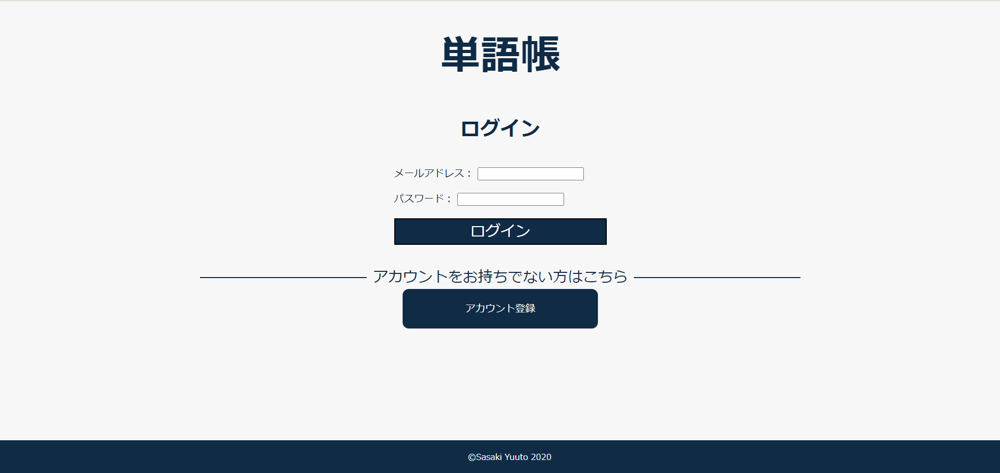

プロフィール
佐々木悠人
Sasaki Yuto
年齢：21歳
出身：岩手県盛岡市 2001年6月2日
趣味：ゲーム・ボウリング・食べること・YouTubeを見ること
学校：盛岡情報ビジネス＆デザイン専門学校 高度情報工学科
メール：y.sasaki.sys20@morijyobi.ac.jp
GitHub：https://github.com/matico62
制作物

スキル
| 今まで学んできたもの | |
|---|---|
| フロントエンド | |
| HTML | CSS |
| JavaScript | TypeScript |
| React | |
| バックエンド | |
| Python | Flask(Python) |
| Java | Java Servlet |
| PHP | C言語 |
| C# | Go言語 |
| Dart | Flutter(Dart) |
| MySQL | Oracle Database |
| Linux(CentOS, Ubuntu) | AWS |
| 取得資格 | |
|---|---|
| 2019/01 | サーティファイ主催 Excel表計算処理技能認定試験3級（2013） |
| 2019/01 | サーティファイ主催 Word文書処理技能認定試験3級（2013） |
| 2020/07 | 文部科学省後援 情報検定 情報システム試験 基本スキル |
| 2020/07 | 文部科学省後援 情報検定 情報システム試験 システムデザインスキル |
| 2020/07 | 文部科学省後援 情報検定 情報システム試験 システムエンジニア |
| 2020/09 | サーティファイ主催 情報処理技術者能力認定試験2級 |
| 2021/02 | 基本情報技術者試験 |
| 2021/05 | ORACLE MASTER Bronze Oracle Database 12c SQL基礎 |
| 2022/06 | LinuC-1認定プロフェッショナル |